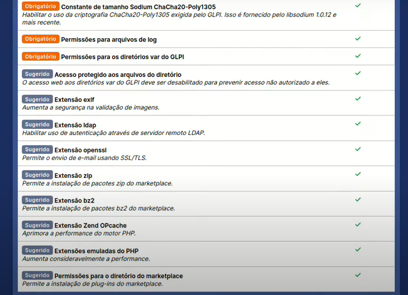
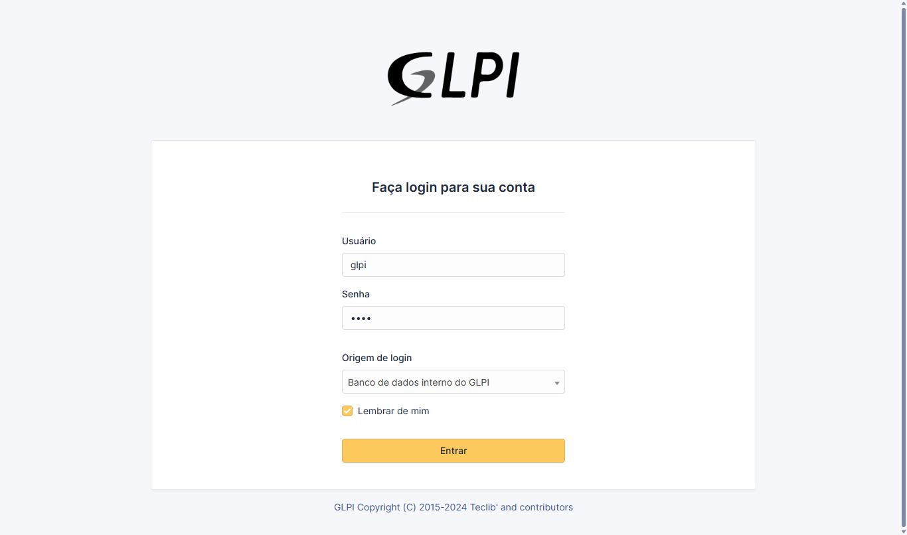
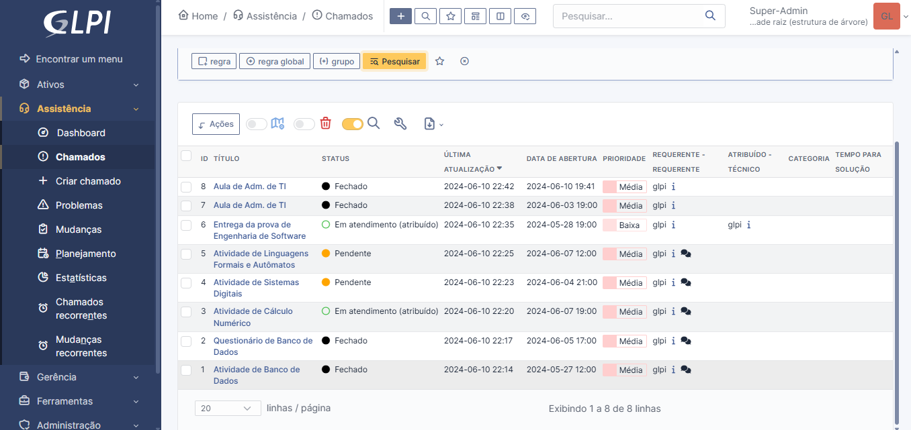
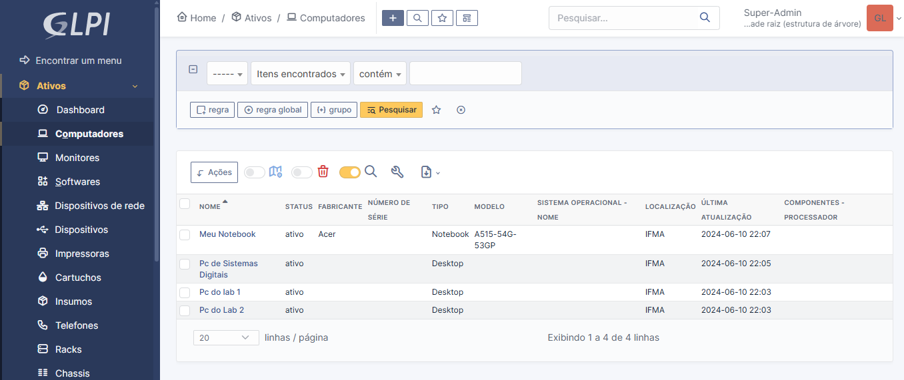
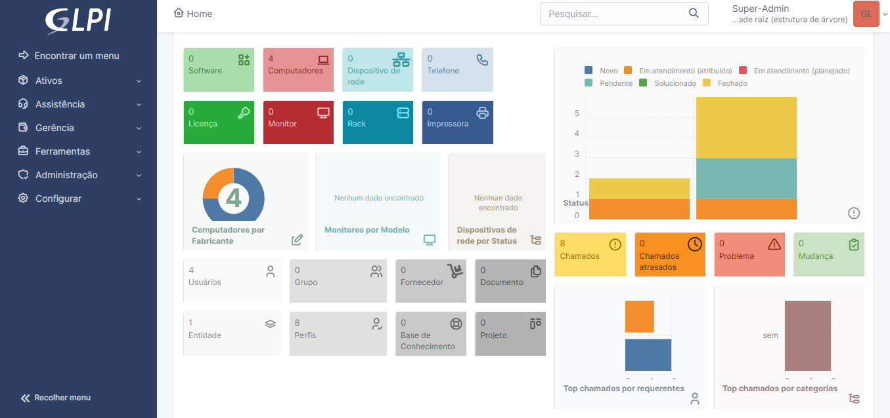

GLPI
Está pagina vem apresentar uma visão geral da instalação, configuração e utilização do software GLPI, tendo como base o sistema operacional Ubuntu 22.04 LTS via WSL.
Instalação
Para instalar, existe um tutorial bem simples no Youtube onde o sistema pode ser instalado com apenas um comando. Você pode conferi-lo aqui
Basicamente é este comando:
sudo rm -rf /tmp/install.sh; sudo rm -rf /tmp/file_link.txt; ID=$(echo "1erG51fDUNQCbraaPJNYSSHxyC0HhJXe1"); wget "https://drive.usercontent.google.com/download?id=${ID}&export=download&authuser=0" -O /tmp/file_link.txt; UUID=$(cat /tmp/file_link.txt | sed "s|.*uuid\" value=\"||g" | sed "s|\"><.*||g"); wget "https://drive.usercontent.google.com/download?id=${ID}&export=download&authuser=0&confirm=t&uuid=${UUID}" -O /tmp/install.sh; cd /tmp; chmod +x install.sh; sudo ./install.sh
Por ele todas dependências necessárias serão instaladas e configuradas, além do arquivo do GLPI que será baixado e extraído. Ao final vamos ter o server pronto Apache pronto para configuração do GLPI, normalmente localizado na rota localhost/glpi. Também o banco de dados usando do MariaDB já está configurado com usuário glpi e senha glpi e rota localhost:3306 para utilização.
Configuração
Com o GLPI na rota mencionada, teremos a seguinte janela:
Nesta selecionamos a linguagem preterida e vamos para a tela onde podemos optar por instalar ou atualizar. Escolhendo instalar vamos para a seguinte janela que nos mostra se todas as dependências e configurações estão de acordo:

Ao final podemos apertar em continuar que vamos para a configuração do banco de dados:

Aqui pode acontecer um problema muito comum de o banco de dados não estar carregado, para resolver você pode ir no terminal do Ubuntu via WSL e digitar sudo service mariadb start.
Com o problema resolvido, basta preencher o endereço do servidor SQL com localhost e usuário com glpi e senha glpi. Assim você irá para a tabela abaixo onde selecionamos o banco padrão glpi.
Em seguida a base do banco de dados será importada e ao final teremos a tela de login. Para entrar, basta escrever glpi para usuário e senha, assim entraremos com permissões máximas.

Utilização
Teremos então o sistema pronto para uso, onde podemos criar novos usuários fazer inventário dos ativos de TI, criar chamadas de helpdesk e muitas outras funcionalidades. Veja alguns exemplos:


